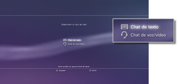
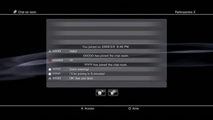

Amigos > Chat de texto > Inicio o cierre de un chat de texto
Inicio o cierre de un chat de texto
Para utilizar esta función, es posible que se le solicite la actualización del software del sistema.
Puede realizar un chat de texto con los miembros de su lista de amigos.
Iniciar un chat de texto
1. |
Seleccione |
|---|---|
2. |
Seleccione |
|
 |
|
3. |
Introduzca un nombre para la sala de chat y, a continuación, seleccione [OK]. |
4. |
Seleccione los amigos que desee invitar al chat y, a continuación, seleccione [OK]. |
|
 |
 (Iniciar nuevo chat).
(Iniciar nuevo chat). (Chat de texto).
(Chat de texto).Notas
- Para poder realizar chats de texto, es necesario iniciar sesión en PlayStation®Network.
- No se enviará ningún mensaje de invitación de chat para chats de texto.
- Pueden entrar hasta 16 personas en la sala de chat de texto.
- No es posible utilizar la función de chat de texto si se establecen restricciones de uso en los ajustes de la cuenta PlayStation®Network. Para obtener información sobre los ajustes de control paterno, consulte [Acerca de XMB™] > [Uso de los ajustes de control paterno] de esta guía.
Entrar en una sala de chat de texto
Si le han invitado a iniciar un chat de texto, se mostrará un mensaje de notificación en la esquina superior derecha de la pantalla. Seleccione  (Sala de chat (sólo texto)) en
(Sala de chat (sólo texto)) en  (Amigos), y, a continuación, seleccione la sala de chat en la que desee entrar.
(Amigos), y, a continuación, seleccione la sala de chat en la que desee entrar.
Notas
- Si se establece [No visualizar] en [Mensajes de notificación] en
 (Ajustes) >
(Ajustes) >  (Ajustes del sistema), no se mostrarán los mensajes de notificación.
(Ajustes del sistema), no se mostrarán los mensajes de notificación. - En la mayoría de los juegos, puede entrar en un chat de texto durante la partida. Pulse el botón PS del mando inalámbrico y, a continuación, seleccione la sala de chat en la que desee entrar en (Amigos) > (Sala de chat (sólo texto)). Pulse el botón PS para volver a la pantalla del juego.
- Es posible entrar en tres salas de chat como máximo al mismo tiempo. Si se une a una cuarta sala de chat, abandonará automáticamente la primera sala de chat a la que se unió.
- Se pueden mostrar hasta 20 salas de chat en (Sala de chat (sólo texto)). Cuando hay más de 20 salas de chat, se eliminarán las salas más antiguas conforme se abren otras nuevas.
Abandonar una sala de chat
Pulse el botón  para cerrar la pantalla del chat de texto. Seleccione la sala de chat que desea abandonar, pulse el botón
para cerrar la pantalla del chat de texto. Seleccione la sala de chat que desea abandonar, pulse el botón  y, a continuación, seleccione [Abandonar] en el menú de opciones.
y, a continuación, seleccione [Abandonar] en el menú de opciones.
Nota
Si se apaga el sistema PS3™ o se cierra la sesión de PlayStation®Network, abandonará automáticamente la sala de chat. Si se une de nuevo a una sala de chat después de abandonarla, no se mostrará el registro de entradas de chat enviadas durante su ausencia.
Eliminar una sala de chat
Seleccione la sala de chat que desea eliminar, pulse el botón y, a continuación, seleccione [Eliminar] en el menú de opciones.
Uso del panel de control
Puede realizar las siguientes operaciones mediante el panel de control de la pantalla del chat de texto.
 |
Invitar a amigo | Permite invitar a un amigo a entrar en la sala de chat de texto. |
|---|---|---|
 |
Lista de participantes | Permite ver la lista de participantes de la sala de chat. |